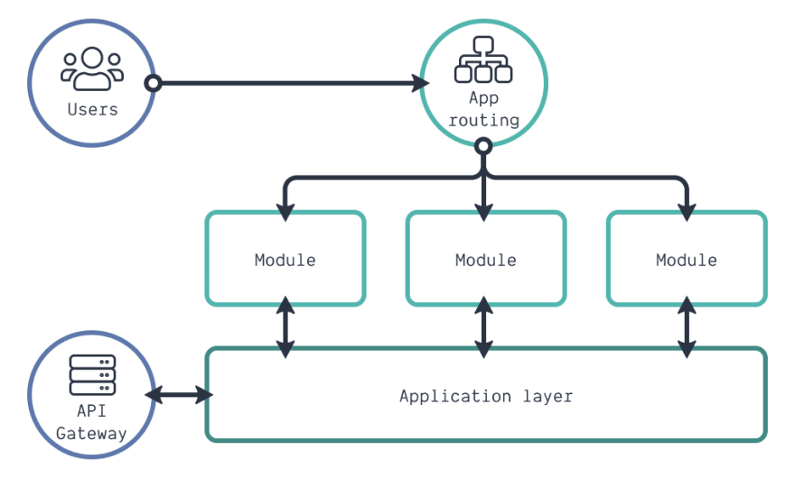

Software Design
Specification
for
Reading Progress Tracker
Version v1.0 approved
Date Created: 23-August-2021
Prepared By:
Team Members
1. Inroducton
The purpose of this Software Design Specification (SDS) is to provide a documentation focusing on specifying a high-level view of the architecture of our system and on the interaction between the user and the system. This document will also provide a high-level design framework around which our project "Reading Progress Tracker" will be built.
This is the era of modern technologies and sheer development. In this developing era online classes for students are very trending and almost became common to all the students of schools, colleges and universities. But the question is how many students are taking these online classes seriously? How many of them are interested? So, our project serves the answers for the students of junior classes. In order to confirm how attentive or interested a particular student is towards the studies can be detected by their facial expressions which will then be recorded by the teachers and according to their wants the teacher might try to improve the academic ways of teaching. For this we need to add features like the students will have access to the online class and our app will be a proper platform for doing online class session. Then their facial expressions would be recorded via the web camera and front camera of the phone during the classes. By such initiative we think the online class session would be very effective and interesting for the students. Also this would add a good dimension to the field of software engineering.
2. Document Conventions
Typical document conventions are maintained where main topics are bold and are numbered. Sub topics are bold, have a smaller font size and are numbered with the main topic number as a prefix, e.g. 1.1. Special names and technical terminology are italicized.
3.Description of Design Components
For server-side we use express.js. Express.js is a web application framework for Node.js. It provides various features that make web application development fast and easy which otherwise takes more time using only Node.js.Express.js is based on the Node.js middleware module called connect which in turn uses http module. So, any middleware which is based on connect will also work with Express.js.Its Easy to configure and customize.Easy to integrate with different template engines like Jade, Vash, EJS etc.Allows usEasy to serve static files and resources of our application to define an error handling middleware.Allows us to create REST API server.
For Client side we use react js.React JS is basically a JavaScript library.Compared to other frontend frameworks, the React code is easier to maintain and is flexible due to its modular structure.React basically allows developers to utilize individual parts of their application on both client-side and the server-side, which ultimately boosts the speed of the development process.It ensures faster rendering.It is single page application.guarantees stable code.It is SEO friendly-its ability to deal with a common search engine failure to read JavaScript-heavy apps.
4. High-Level Component Design
4.1: High-Level Component diagrams

5. Class diagrams
5.1: Class diagrams

6. Database Design
6.1: ER diagrams